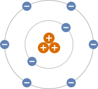

Adding Integers with Different Signs
When adding integers with different signs, we can think of the process as a battle
between positive and negative numbers, where the winner is the sign of the
answer.
Battle 1: If you have $30 and spend $20 to see a movie, your net balance is
$10.
\[ 30 + (-20) = 10 \]
The answer is positive, so the positive team win!
Battle 2: If you have $30 and a credit card debt of $100, your net balance is a debt
of $70.
\[ 30 + (-100) = -70 \]
The answer is negative, so the negative team win!
Why did the positive team win the first battle and lose the second
battle?
The positive team won the first battle because the asset was greater than the debt,
but lost the second because the debt was greater than the asset. In any number
battle, the winner is always the team with the greatest strength, regardless of its
sign. Mathematically, we find the absolute value of a number to determine its
magnitude, strength or size.
Battle 1: \(30 + (-20) = 10\)
- The strength of the $30 asset is \(|30| = 30\).
- The strength of the $20 debt is \(|-20| = 20\).
Since \(|30|\) is larger than \(|-20|,\) the positive team was stronger and won the battle.
Battle 2: \(30 + (-100) = -70\)
- The strength of the $30 asset is \(|30| = 30\).
- The strength of the $100 debt is \(|-100| = 100\).
Since \(|-100|\) is larger than \(|30|,\) the negative team was stronger and won the battle.
We are now ready for a formal mathematical rule that can be applied to any problem,
not just those involving money. As noted earlier, adding numbers with different signs
is a bit of a paradox: to find the sum, we actually have to subtract. From the number
battles, we know that the sign of the answer depends on which number has the
greatest strength. To turn these observations into a formal rule, we use absolute
value.
Steps for Adding Integers with Different Signs
- Find the absolute value or strength of each number.
- Subtract the smaller absolute value from the larger absolute value.
- Write the answer with the sign of the number with the larger absolute
value.
Use the steps to find the sum \(-50 + 30.\)
-
Step 1:
-
Find the Absolute Values (The Strengths)
Find the strength of each number.
\[ |-50| = 50 \quad \text {and} \quad |30| = 30 \]
-
Step 2:
-
Subtract the Absolute Values (The Battle)
Since we are adding numbers with different signs, the numbers
“battle" by finding the difference between their strengths.
\[ 50 - 30 = 20 \]
-
Step 3:
-
Declare the Winner and Write the Answer (The Sign)
Compare the absolute values from the first step. Since \(|-50|\) is greater
than \(|30|,\) the negative team is stronger and wins the battle!
\[ -50 + 30 = -20 \]
Use the steps to find the sum
\(15 + (-40).\)
-
Step 1:
-
Find the Absolute Values (The Strengths)
\[ |15| = \answer {15} \quad \text {and} \quad |-40| \begin {prompt} = \answer {40} \end {prompt} \]
-
Step 2:
-
Subtract the Absolute Values (The Battle)
\[ 40 - 15 = \begin {prompt} \answer {25} \end {prompt} \]
-
Step 3:
-
Declare the Winner and Write the Answer (The Sign)
Compare the absolute values: is \(|15|\) or \(|-40|\) larger?
The positive team wins, since \(|15|\) is larger. The negative team wins,
since \(|-40|\) is larger.
\(15 + (-40) = \answer {-25}\)
Find the following sums.
\[ -12 + 4 = \answer {-8} \]
\[ 12 + (-4) = \answer {8} \]
\[ -20 + 32 = \answer {12} \]
\[ 100 + (-600) = \answer {-500} \]
Atoms are the tiny building blocks of all matter. An atom consists of protons,
electrons and neutrons. Each proton has a positive charge (
\(+1\)), each electron has a
negative charge (
\(-1\)) and neutrons have no charge (0). Chemists find the charge of an
atom by adding the charges of its electrons and protons. Write the addition problem
to find the charge of an atom that has eight electrons and three protons. Then find
the charge of the atom.

Show Alt Text
A model of the atom. The nucleus has 3 large orange protons with white plus signs.
Two gray orbits surround it: an inner orbit with 2 blue electrons and a slightly
larger outer orbit with 6 blue electrons. All electrons have white minus signs.
\(-8 + 3\) \(-8 + (-3)\) \(8 + (-3)\) \(8 + 3\)
Charge \(= \answer {-5}\)